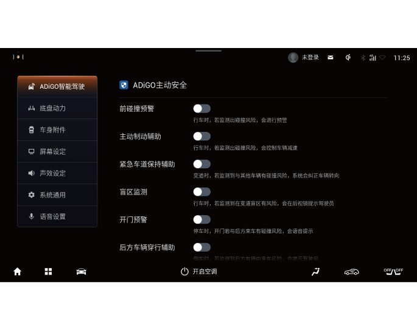

主动制动辅助系统*
主动制动辅助系统（AEB）根据安装在车辆前部的毫米波雷达和风窗玻璃上的智能前向摄像头探测前方路径上的车辆与本车之间的相对距离和速度，综合驾驶员的其它操作行为（如踩制动踏板、踩油门踏板等信息），评估碰撞危险程度，并在必要时对车辆进行制动干预。当检测到碰撞将要发生时，AEB会自动对车辆进行制动，当驾驶员正在进行制动，但制动力不足以避免碰撞时，系统会自动加大制动力，以避免或者缓解碰撞。
开启和关闭
通过音响系统“系统设置→驾驶辅助→纵向驾驶辅助→智能限速控制”界面，点击 软按键①设置开启或关闭智能限速控制功能。
软按键①设置开启或关闭智能限速控制功能。
此功能开启后，TSR功能同步开启；此功能关闭后，TSR功能仍保持上一时刻状态。
提示
系统具有开关状态记忆功能，车辆启动后，开关状态将与上次车辆熄火时的状态相同。
— 页面到底了 —